Entitry Relationship Diagram Bagian Ke-2
Topik
- Pemodelan data Top-Down & Bottom-Up
- Variasi ERD
- CASE Tools
Tujuan
Mahasiswa diharapkan memperoleh pemahaman lebih lanjut mengenai ERD dan hubungannya dengan pemodelan data, variasi ERD, dan tools yang dapat digunakan untuk membuat ERD (Versi Chen)
Pendahuluan
Pemodelan Data
Definisi singkat (dalam lingkup software engineering) untuk pemodelan data adalah proses pembuatan model data (data model) untuk sebuah sistem informasi yang melibatkan teknik-teknik formal tertentu. Dalam definisi yang lebih lengkap, data modelling berarti sebuah proses penganalisisan persyaratan- persyaratan data (data requirements) yang dibutuhkan untuk mendukung terlaksananya proses-proses bisnis (business processes) dalam lingkup sistem informasi pada suatu organisasi.
Tujuan utama dari data modelling adalah mengubah persyaratan-persyaratan data pengguna menjadi basisdata yang sesungguhnya (actual database) yang memenuhi persyaratan-persyaratan tersebut. Shingga data modelling perlu dilakukan untuk memastikan sistem informasi yang dihasilkan nantinya dapat berfungsi secara benar dan tepat, sesuai dengan persyaratan organisasi yang menggunakannya.
Data Model
Hasil dari pemodelan data adalah model data (data model). Data model adalah sebuah model (yang berarti perumpamaan atau analogi) abstrak yang mewakili dan menjelaskan hubungan antara elemen-elemen data pada suatu entitas (objek) di dunia nyata.
Contohnya, apabila kita menjumpai data dunia nyata seperti berikut: "sebuah mobil berwarna putih buatan tahun 2017, dimiliki oleh seorang dosen bernama Muhammad Ali." Maka kita dapat membuat sebuah model yang merepresentasikan sifat-sifat mobil dan pemilik berikut hubungan atara keduanya:
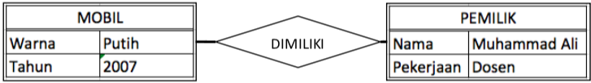
Tampilan/bentuk model yang dihasilkan dapat berupa apa saja, namun dalam membuat suatu model kita harus meyakinkan bahwa karakteristik utama dari model semuanya telah ada. Karakteristik utamanya adalah, sebuah model harus dapat menggambarkan dan mewakili jumlah/nilai data yang dimiliki oleh entitasnya berikut hubungan antara masing-masing entitas yang terlibat
Berdasarkan urut-urutan/fase pengembangan dari requirements menuju actual database, data model terbagi menjadi 3 garis besar:
Conseptual Data Model (CDM)
Berisi gambaran umum data-data yang harus disimpan berikut signifikansinya pada proses bisnis suatu organisasi. Sifat dari model ini relatif sederhana, idak melibatkan istilah teknis, dan bisa dimengerti oleh semua level manajemen dari lingkungan IT maupun non-IT. Salah satu diagram yang dapat digunakan untuk merepresentasikan model ini adalah Data Structure Diagram (DSD).
Logical Data Model (LDM)
Berisi gambaran lebih detail mengenai entitas-entitas yang terlibat, atribut, dan hubungan antara satu dengan yang lainnya. Model ini melibatkan entitas, atribut, dan relationship, serta mulai menggunakan istilah-istilah teknis yang berhubungan denga proses bisnis organisasinya. 1 CDM dapat membutuhkan 1 atau lebih LDM. Untuk menggambarkan model ini kita dapat menggunakan Entity Relationship Diagram (ERD)
Physical Data Model (PDM)
Model ini menjelaskan bagaimana data disimpan secara fisik pada database. Model ini bersigat sangat spesifik dan bergantung (dependent) pada jenis/merk DBMS yang digunakan. Model ini melibatkan tabel, kolom, primary key, panjang data. Contoh diagram yang digunakan pada model ini adalah EER Diagram pada MySQL
Pada data modelling saat ini terdapat 2 pendekatan yang paling populer yaitu 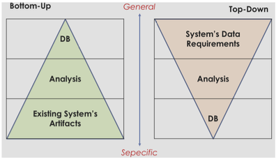
Top-Down
Adalah pendekatan yang bergerak dari umum ke spesifik. Pendekatan ini baik digunakan untuk membuat model data pada sistem yang sama sekali baru. Pada pendekatan ini, pengguna memberikan gambaran umum sistem dan data apa saja yang perlu disimpan. Analis kemudian mendetailkan (dengan cara mewawancarai dan mengira-ngira) lebih lanjut tabel-tabel dalam database berikut kolom-kolomnya.
Bottom-Up
Kebalikan dari metode sebelumnya, pada metode ini dilakukan penalaran yang bergerak dari spesifik ke umum. Pendekatan ini memiliki kelebihan jika digunakan untuk membuat model data berdasarkan sistem yang sudah ada sebelumnya. Dalam pendekatan ini pengguna menunjukkan sistem (dapat berupa sistem manual maupun yang sudah terkomputerisasi) yang saat ini berjalan. Analis kemudian memeriksa semua dokumen, formulir, struk, laporan, buku kas, dll. yang terlibat dalam sistem tersebut kemudian menyimpulkan database-nya.
ERD Versi Martin
Selain ERD versi Chen, terdapat juga ERD versi martin yang tidak kalah populer. Pada ERD ini terdapat 5 macam relationship yaitu:
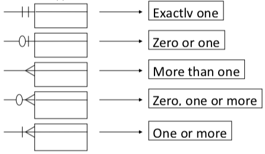
CASE tools untuk membuat ERD
Untuk membuat ERD kita dapat memanfaatkan berbagai macam tools. Ada banyak tools yang dapat digunakan untuk membuat ERD dan tidak ada alasan mutlak untuk memilih tools tertentu diatas tools yang lain. Kita bebas menggunakan tools mana saja yang cocok untuk kebutuhan kita. Bahkan sebenarnya tidak ada keharusan untuk menggunakan tools, apabila mencukupi kita dapat membuat ERD pada kertas atau papan tulis.
Pada praktikum kali ini kita akan mencoba menggunakan salah satu tools untuk membuat ERD versi Chen. Tools tersebut bernama TerraEr. Tools tersebut dipilih karena lisensinya open source, ringan, dan mudah digunakan dimana saja selama ada JRE yang telah diinstal.
Praktikum
- Copy file TerraER3.13.jar ke komputer Anda, untuk menjalankannya dalam komputer Anda harus sudah terinstall Java Runtime Environment (JRE)
- double klik file tersebut atau jalankan perintah
java -jar TerraER3.13.jarsehingga dapat dilihat seperti pada tampilan di bawah ini
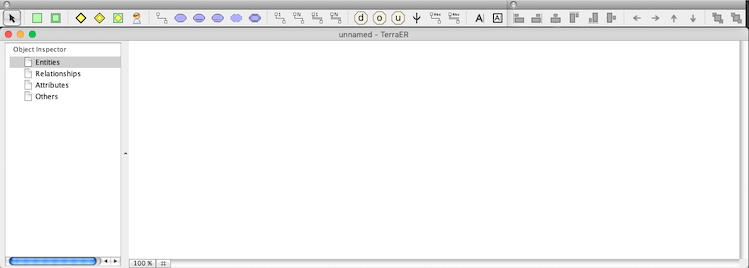
- Untuk membuat ERD pada TerraEr, kita gunakan toolbar yang berada dibagian atas jendela aplikasi. Buat 1 entitas dengan cara Klik 1x pada ikon persegi berwarna hijau lalu klik 1x juga pada canvas(jendela utama aplikasi).
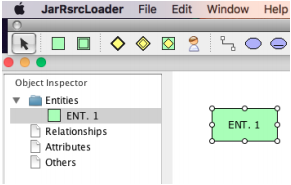
Untuk mengubah nama entitas, klik 2 kali pada simbol entitas. Beri nama entitas baru tersebut dengan nama
karyawan.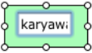
Tambahkan entitas lemah (weak entity) dengan cara yang sama seperti cara yang dilakukan untuk menambahkan entitas sebelumnya. Klik 2x dan berinama entitas tersebut dengan nama
tanggunganTambahkan identifying relationship dengan cara menambahkan simbol berbentuk belah ketupat dengan garis tepi ganda.
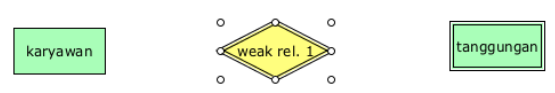
Beri nama relationship tersebut dengan nama
memiliki.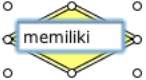
Untuk menambahkan properties/attributes, kita gunakan simbol-simbol elips pada bagian tengah panel atas.
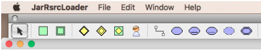
Untuk menghubungkan attribute dengan entitas atau relationship, kita gunakan
Attribute Connectiondengan mengklik 1x ikon bergambar berikut: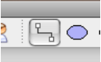
Lalu mengklik 1x pada atribut yang diinginkan kemudian di-drag ke entity atau relationship yang menjadi pemilik dari atribut tadi. Tambahkan 1 atribut kunci dan 1 atribut simple. Lalu hubungkan keduanya dengan entitas kuat karyawan yang telah kita buat sebelumnya.
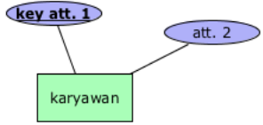
Tambahkan 1 partial key atribut dan 1 attribut simple pada weak entity tanggungan dengan cara yang sama seperti sebelumnya.
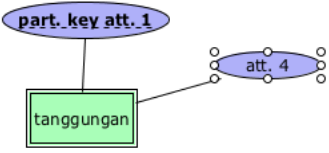
Untuk menghubungkan entity dengan relationship kita gunakan button-button yang ada di sebelah kanan panel atas. Ada 4 macam garis penghubung:
- 1, untuk relationship 1 to....
- N, untuk relationship many to....
- 1=, total participation untuk entitas lemah dengan relationship 1 to....
- N=, total participation untuk entitas lemah dengan relationship Many to....
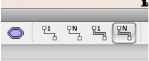
Hubungkan entitas lemah ‘tanggungan’ dengan relationship ‘memiliki’ menggunakan ‘total participation N’. Klik ikon di atas 1x, lalu klik entity ‘tanggungan’ dan drag ke arah relationship ‘memiliki’.
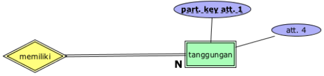
Dengan cara yang sama, klik penghubung biasa relationship ‘1 to...’ dan hubungkan entity ‘karyawan’ dengan relationship ‘memiliki’.
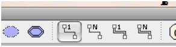
Beri nama semua atribut pada entitas-entitas yang ada sehingga menjadi seperti berikut:
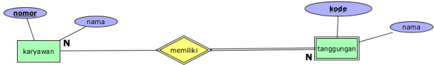
Tugas
Simpanlah lagi ERD yang Anda buat tadi dengan nama lain. Lalu modifikasi dan lengkapilah ERD tersebut dengan semua elemen (Entities, Attributes, Relationships) yang terdapat dalam skenario Top-Down berikut:
Perusahaan konstruksi bernama PT. Maju Jaya ingin dibuatkan sistem informasi untuk mencatat data-data karyawannya. Direksi memberikan arahan kepada analis bahwa pada sistem yang nantinya akan dibuat mereka butuhkan kemampuan untuk menyimpan data karyawan berikut tanggungannya, data departemen, dan sekaligus data proyek. Pada Karyawan, selain Nomor Induk Karyawan (NIK), harus disimpan data-data tanggal lahir, umur, nama depan, nama tengah dan belakang. Begitu juga dengan jenis kelamin, alamat, serta gaji per bulannya. Sedangkan untuk tanggungan, yang perlu disimpan adalah tentu saja nama, jenis kelamin, tanggal lahir, umur, dan juga hubungannya dengan karyawan yang menanggung (apakah dia Istri, suami atau anak dari penanggung?).
Seorang karyawan dapat memiliki 1 atau lebih tanggungan atau juga dapat tidak memiliki tanggungan sama sekali. Sebagian dari karyawan-karyawan perusahaan tersebut menduduki jabatan supervisor yang tugasnya mengawasi kinerja karyawan-karyawan lain yang berada dalam departemen yang sama. Supervisor-supervisor ini melapor kepada masing-masing manajer di departemennya. Baik supervisor maupun manajer, keduanya juga merupakan karyawan, karena itu mereka juga pasti memiliki NIK.
Pada perusahaan tersebut terdapat beberapa departemen yang masing-masing dipimpin oleh seorang manajer. Direksi perusahaan menginginkan agar sistem dapat menyimpan informasi mengenai departemen-departemen yang meliputi nama departemen, nomor departemen, nomor ekstensi telepon, jumlah karyawan yang bekerja di dalamnya, serta lokasi kota sebuah departemen berada. Karena PT. Maju Jaya memiliki banyak cabang, departemen-departemennya bisa berada kota yang berbeda-beda. Contohnya Departemen Pemasaran ada di Jakarta, dan Departemen Lapangan berada di Malang. Selain dari itu semua, perlu juga disimpan informasi tentang kapan setiap manajer mulai menjabat di departemennya. Fungsi dari tiap departemen yang ada adalah untuk mengontrol proyek-proyek yang dikerjakan oleh PT. Maju Jaya. Sebagai contoh, untuk proyek pembangunan jalan, jembatan dan sejenisnya, dikontrol oleh Departemen Pekerjaan Umum. Untuk proyek semacam perbaikan taman kota dan tempat rekreasi, ditangani oleh Departemen Pertamanan dan Rekreasi. Dan banyak lagi proyek-proyek lainnya. Satu departemen dapat mengontrol banyak proyek sekaligus. Namun satu proyek hanya boleh ditangani oleh tepat 1 departemen saja.
Semua karyawan akan selalu ditugaskan ke satu atau lebih proyek tertentu, dan semua proyek pasti ada banyak karyawan yang menangani. Data seputar proyek yang perlu disimpan meliputi nama proyek, lokasi, nomor proyek, dan jenis proyek. Sementara untuk keperluan penggajian, perlu juga dicatat berapa total jam kerja yang dihabiskan oleh setiap karyawan yang bekerja dalam suatu proyek.
Cari dan install CASE tools yang dapat digunakan untuk membuat ERD versi Martin. Software apapun boleh asalkan dengan syarat harus gratis (legal) atau open source. Mari kita hindari penggunaan perangkat lunak ilegal.
- Gunakan tools yang telah Anda install tadi untuk membuat ERD versi Martin dari soal nomor 1.